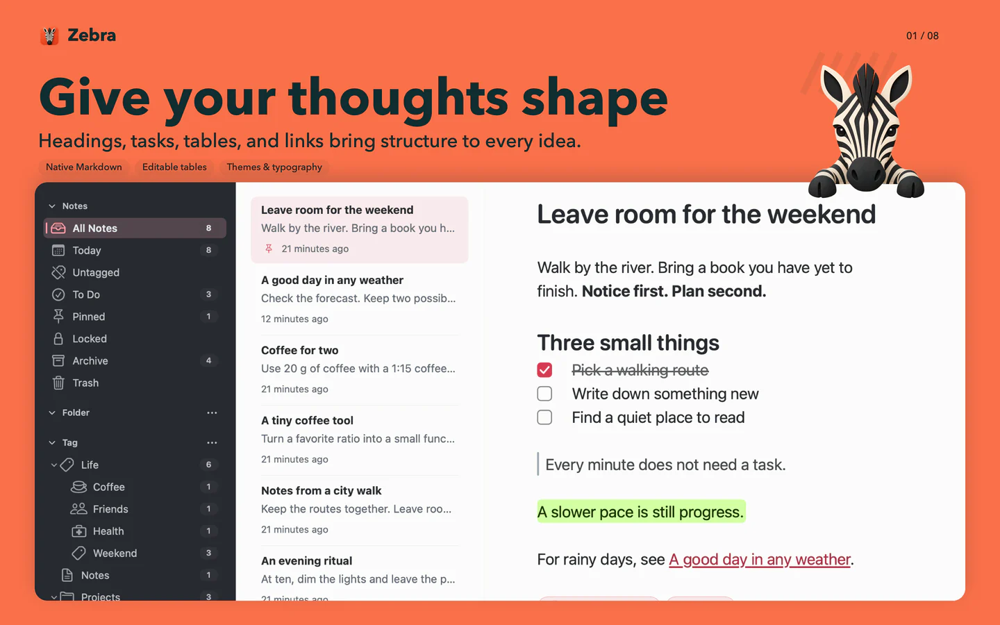

01
Give your thoughts shape
Headings, tasks, tables, and links bring structure to every idea.
Markdown notes · Mac, iPhone & iPad
A quick thought. A careful explanation. A whole project. Bring words, diagrams, math and code together in a notebook that feels at home on your devices.

Zebra on Mac · fictional notes, real app screenshots
A little note. A bigger picture.
Start with a sentence. Add the details that make it yours. Choose a device to see what Zebra can do there.
Mac · 8 features
Headings, tasks, tables, and links bring structure to every idea.
Map a process or relationship with editable Mermaid diagrams.
Keep LaTeX formulas and the thinking behind them together.
Keep syntax-highlighted code and its explanation in the same note.
Folders hold projects. Nested tags connect ideas across them.
Describe an idea in your own words to find related notes locally.
Turn documents into editable notes locally, then export the format you need.
Concurrent edits to ordinary note text merge across your iCloud devices.
Real app screens with sample notes. The zebra is our illustrated window companion. The sync diagram explains the strategy; it is not a live sync recording.
Pick up where you left off
Enable private iCloud sync and keep writing on your own Mac, iPhone and iPad, using the same Apple Account. New installations start with sync turned off.
Your devices · Your Apple AccountConcurrent changes to a note’s text merge automatically. If you write offline, those edits can join the rest when you reconnect.
Concurrent encrypted edits remain available as separate versions. Unlock them and choose what to keep, with history available for recovery.
| Capability | Mac | iPhone & iPad |
|---|---|---|
| Write & organize | Markdown, tables, diagrams, math, code, folders and nested tags | Markdown, tables, diagrams, math, code, folders and nested tags |
| Find | Local semantic + keyword search, find within notes | Keyword search and find within notes |
| Bring in & take out | Local document conversion and exports including PDF, DOCX and ePub | Photo and file attachments; share Markdown or a note package |
| Continue writing | Optional iCloud sync with your own devices | Optional iCloud sync with your own devices |
A helping hoof
From the first note to a detail worth finding again. Here is how writing, search, sync and your data work.
Privacy & data ↗Zebra requires macOS 14 or later on Mac, and iOS 17 or later on iPhone and iPad. All platforms support Markdown, tables, math, Mermaid diagrams, code highlighting, folders, and nested tags. Mac also offers local semantic search, document conversion, and more export formats. iPhone and iPad offer keyword search, find within notes, photo and file attachments, and sharing as Markdown or a note package with attachments.
No Zebra account is required. Notes are stored on your device by default, and core writing and organization work offline. Changes save automatically on the device. iCloud sync needs an Apple Account and a connection. Web clipping, link previews, and remote attachments connect to the relevant websites.
Sign in to the same Apple Account on each device and make sure iCloud is available. Then enable iCloud sync in Zebra's settings on each device. Sync is off by default for new installations; existing choices are preserved. The first sync can take time, so open Zebra and keep a network connection available. If changes have not arrived, check the app's sync status, your connection, and your iCloud sign-in. Turning sync off on one device does not turn it off elsewhere or erase cloud copies.
Ordinary note text uses CRDT sync to merge concurrent edits across devices. Offline edits can join those changes when you reconnect. Encrypted notes work differently: sequential edits move forward, while concurrent edits are retained as separate encrypted versions. If there are versions to resolve, open Encrypted Note Versions, use the relevant password to view them, and choose the version to use. Sync connects your own devices; it is not a shared team workspace.
On Mac, press ⌘O to open Zebra Actions and describe what you remember. Local semantic search combines the meaning of Chinese and English text with keywords. No separate model download is needed, and keyword search remains available if the system's semantic capabilities are unavailable. Encrypted notes are excluded from semantic indexing, even while unlocked. iPhone and iPad currently offer keyword search and find within notes.
On Mac, import Markdown, HTML, TextBundle, and other supported formats. Text-based PDFs, DOCX, XLSX/XLS, PPTX, and other supported documents can be converted locally into editable notes while keeping the originals. Conversion focuses on text and structure; complex layouts may change. Mac exports include Markdown, PDF, HTML, DOCX, and ePub. On iPhone and iPad, attach photos or files, then use the note menu to share Markdown or package the note and its attachments together.
Sync carries changes between devices and should not be your only backup. On Mac, choose File > Export Backup to save a .zebrabk library backup with notes and attachments. You can review the effect of a restore before proceeding. Turning sync off or removing the app does not erase copies on other devices, exported files, backups, or existing cloud copies. Deleted encrypted notes retain their sync history for recovery. There is currently no button to erase all cloud history. Keep an independent copy before deleting or restoring important work.
The developer has no stored password or recovery key that can restore access. Keep your password safe; encrypted content in a backup still needs it. Individual note encryption protects the body and encrypted attachments, while titles and some outer information remain visible. Encrypting an ordinary note cannot retract plaintext copies that were previously synced, exported, or backed up.
Tell us your device, Zebra version, what you expected and what happened. A small example helps. GitHub reports are public: leave out private notes, passwords and complete libraries.